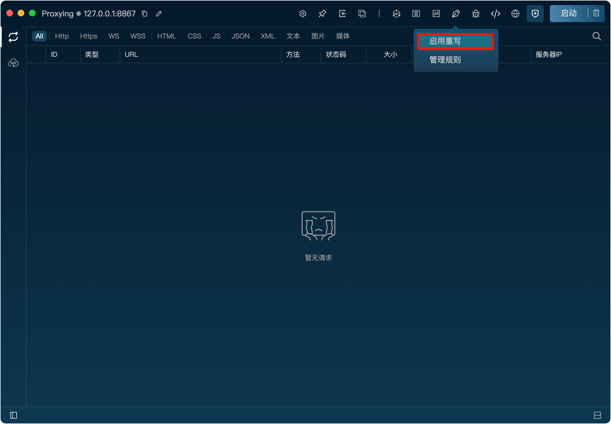
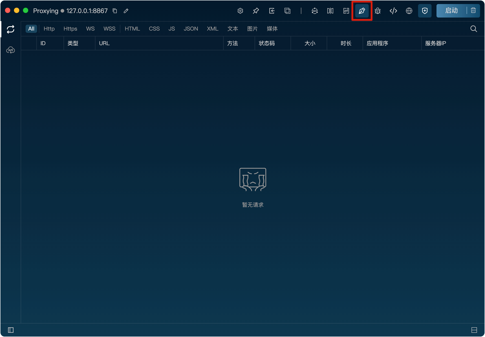
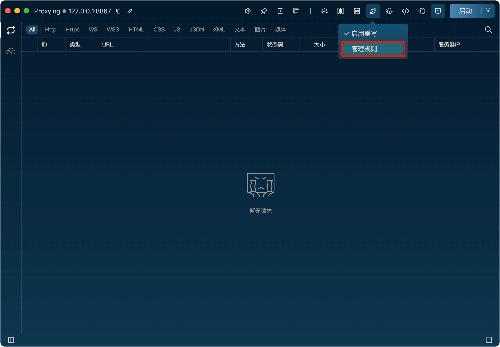
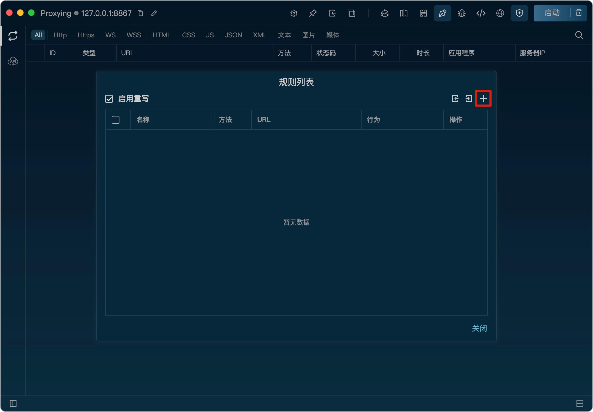
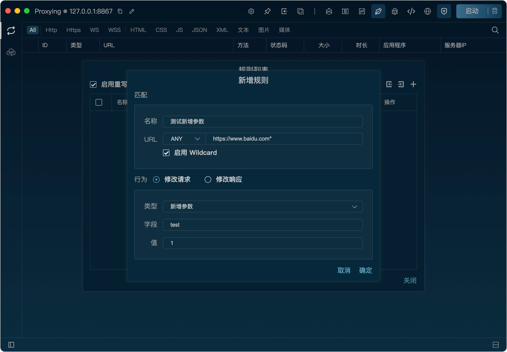
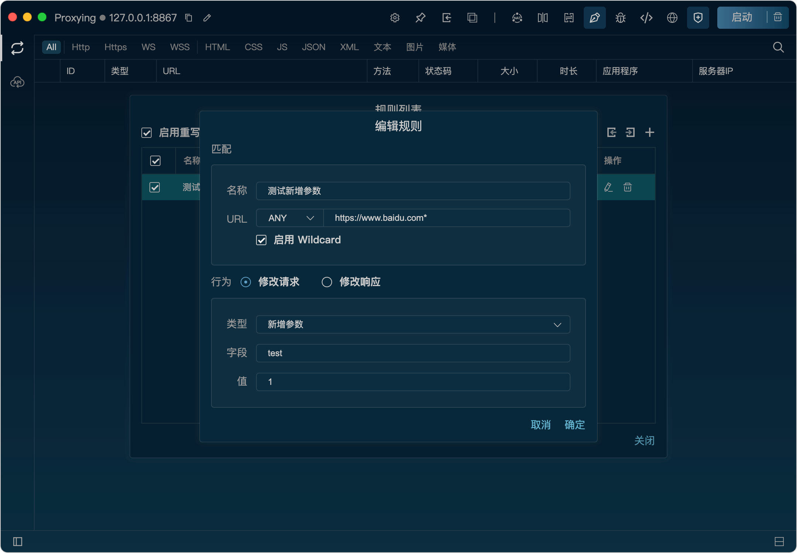
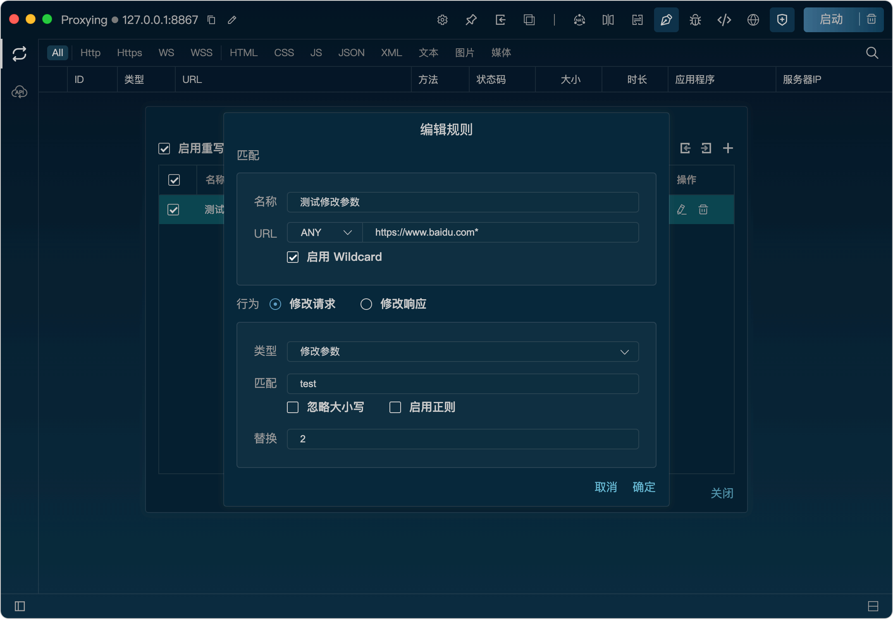
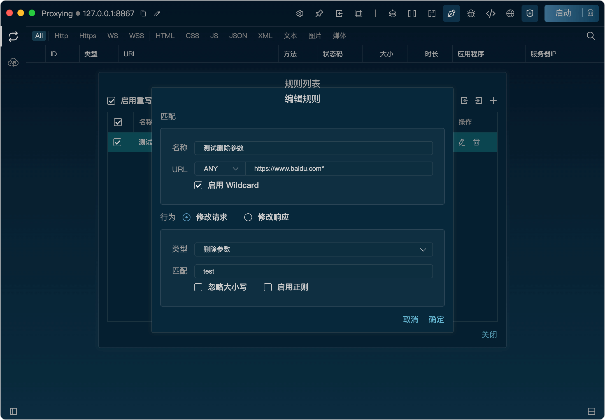
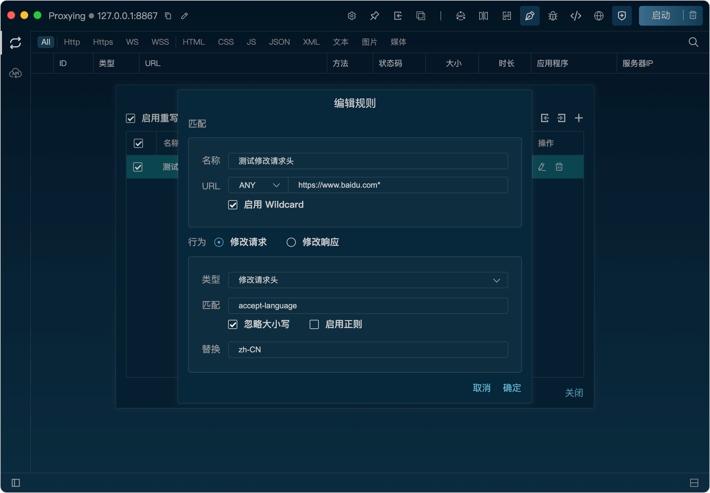
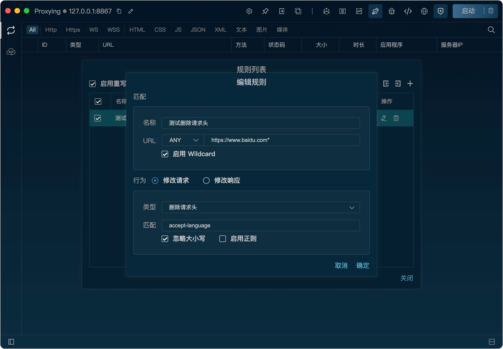

重写
功能
重写功能可以使用事先创建好的规则在请求发送到服务器之前对请求进行修改，从而实现对请求的重写和调整。也可以在响应返回给客户端之前对响应进行修改，从而实现对响应的重写和调整。
开启重写功能
将鼠标悬浮到重写图标上，点击“启动重写”按钮即可开启重写功能。

开启后，重写图标会高亮显示，表示重写已开启。

新增重写规则
1、将鼠标悬浮到重写图标上，点击“规则管理”按钮打开重写规则列表。

2、在规则列表弹框里，点击“+”按钮，打开新增规则弹窗。

3、在弹窗里，填写匹配规则、重写类型，点击“确定”按钮即可新增规则。

修改请求
修改请求时可以对发送到服务器的请求进行新增参数、修改参数、删除参数、新增请求头、修改请求头、删除请求头、替换请求体、修改请求体等修改。
新增参数：
在URL后面添加新的参数，格式为key=value。
例：
请求URL为https://www.baidu.com/，下面的配置将会把URL修改为https://www.baidu.com/?test=1。

修改参数：
对URL参数进行匹配（支持正则表达式、忽略大小写），替换匹配到的参数的值。
例：
请求URL为https://www.baidu.com/?test=1，下面的配置将会把URL修改为https://www.baidu.com/?test=2。

删除参数：
对URL参数进行匹配（支持正则表达式、忽略大小写），删除匹配到的参数和值。
例：
请求URL为https://www.baidu.com/?test=1，下面的配置将会把URL修改为https://www.baidu.com/。

新增请求头：
添加新的请求头字段，格式为key: value。
例：
请求URL为https://www.baidu.com/，下面的配置将会把请求头中添加"test_add_header: 1"。
修改请求头：
对请求头字段进行匹配（支持正则表达式、忽略大小写），替换匹配到的字段的值。
例：
请求URL为https://www.baidu.com/，下面的配置将会把请求头中"Accept-Language"字段的值修改为zh-CN。

删除请求头：
对请求头字段进行匹配（支持正则表达式、忽略大小写），删除匹配到的字段和值。
例：
请求URL为https://www.baidu.com/，下面的配置将会把请求头中"Accept-Language"字段删除。

替换请求体：
将请求体替换为指定的内容，支持文本和文件。
例：
请求URL为https://www.baidu.com/，下面的配置将会把请求体替换为"test replace body"。
修改请求体：
对请求体进行文本匹配（支持正则表达式、忽略大小写），替换匹配到的文本。
例：
请求URL为https://www.baidu.com/，请求体为{"test":1}，下面的配置将会把请求体修改为{"test1":1}。
修改响应
修改响应时可以对服务器的响应进行新增请求头、修改请求头、删除请求头、替换请求体、修改请求体等修改。这些修改规则和修改请求的规则类似，只不过是针对响应进行的。